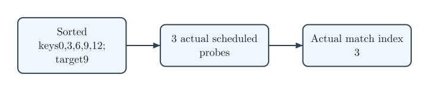
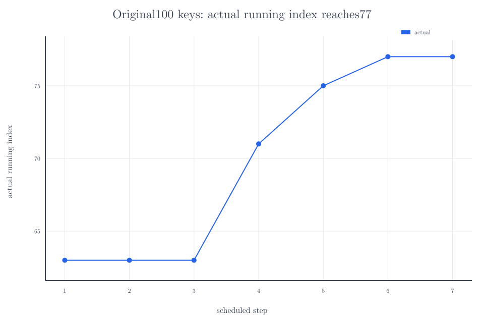
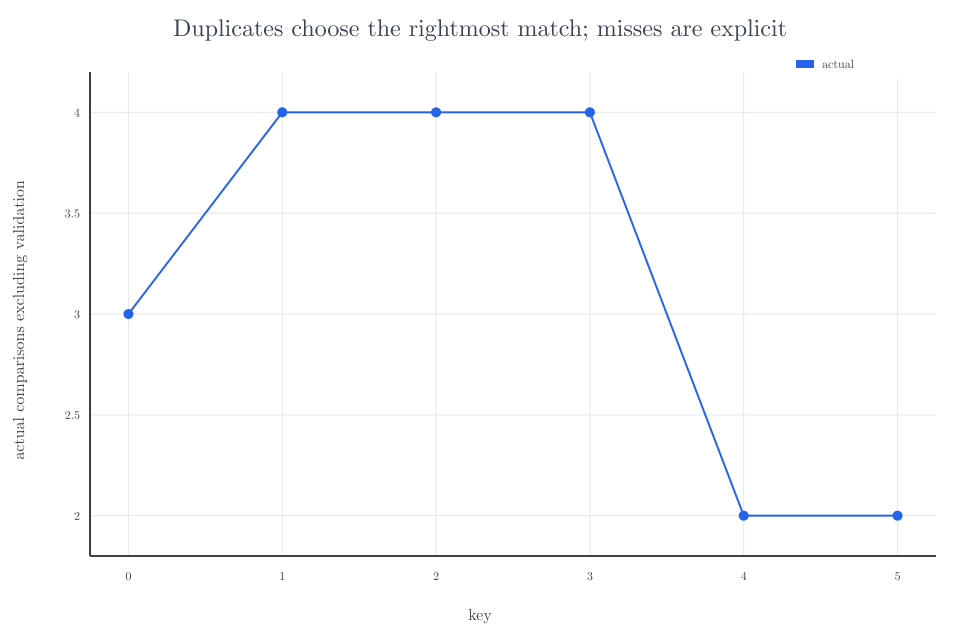
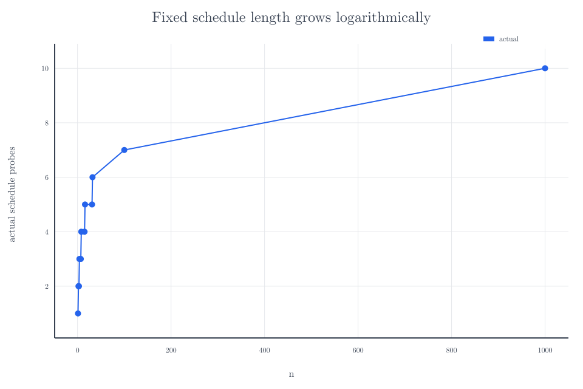

Uniform binary search: actual fixed-schedule probes
Abstract
Repeated searches in a sorted array can reuse one schedule of descending strides. The search must still guard each candidate index and distinguish a missing key from the last key below it.
The method
Start i=−1. For each descending power-of-two stride s, accept i+s only if it is in bounds and a[i+s]≤key. The invariant keeps i below or at the rightmost value≤key, while the remaining strides cover every smaller gap. At termination i is that rightmost predecessor; equality decides membership. Duplicates therefore return the rightmost equal index. Actual probes cost O(log n); this checked convenience API additionally scans ordering and finite values in O(n).
Simple worked example
#include <dm/dm.hpp>
int main() {
namespace a = dm::algorithms;
namespace g = dm::graphics;
std::filesystem::create_directories("build");
auto r =
a::uniform_binary_search_work(std::vector<int>{0, 3, 6, 9, 12}, 9,
a::uniform_search_table(5));
std::print("| stride | before | probe | accepted | after |\n|---:|---:|---:|---|---:|\n");
for (auto q : r.probes)
std::print("|{}|{}|{}|{}|{}|\n", q.step, q.before, q.probe, q.accepted,
q.after);
g::Diagram concept_diagram(48, 1100);
concept_diagram.node("n0", {0, 0}, "Sorted keys0,3,6,9,12; target9");
concept_diagram.node("n1", {5, 0},
std::format("{} actual scheduled probes",
r.probes.size()));
concept_diagram.node("n2", {10, 0},
std::format("Actual match index {}", r.index));
concept_diagram.edge("n0", "n1").edge("n1", "n2");
concept_diagram.save_svg("build/uniform_binary_search_tiny.svg");
}| stride | before | probe | accepted | after |
|---|---|---|---|---|
| 4 | -1 | 3 | true | 3 |
| 2 | 3 | 5 | false | 3 |
| 1 | 3 | 4 | false | 3 |

The retained original experiment
#include <dm/dm.hpp>
int main() {
namespace a = dm::algorithms;
namespace g = dm::graphics;
std::filesystem::create_directories("build");
std::vector<int> keys(100);
for (int i = 0; i < 100; ++i)
keys[i] = 3 * i;
auto r =
a::uniform_binary_search_work(keys, 231, a::uniform_search_table(100));
std::vector<double> x, y;
std::print("| step | stride | actual running index |\n|---:|---:|---:|\n");
for (std::size_t i = 0; i < r.probes.size(); ++i) {
auto q = r.probes[i];
std::print("|{}|{}|{}|\n", i + 1, q.step, q.after);
x.push_back(i + 1);
y.push_back(q.after);
}
std::print("\nActual target231 match index {}; expected77.\n", r.index);
auto p = g::RPlot::create();
p.line(x, y, "actual", {37, 99, 235}, 2);
p.points(x, y, "", {37, 99, 235}, 5);
p.title("Original100 keys: actual running index reaches77").x_label(
"scheduled step").y_label("actual running index");
p.save_svg("build/uniform_binary_search_original.svg");
}| step | stride | actual running index |
|---|---|---|
| 1 | 64 | 63 |
| 2 | 32 | 63 |
| 3 | 16 | 63 |
| 4 | 8 | 71 |
| 5 | 4 | 75 |
| 6 | 2 | 77 |
| 7 | 1 | 77 |
Actual target231 match index 77; expected77.

Checking the theory and controls
#include <dm/dm.hpp>
int main() {
namespace a = dm::algorithms;
namespace g = dm::graphics;
std::filesystem::create_directories("build");
std::vector<double> x, y;
std::vector<int> keys{1, 2, 2, 4};
std::print("| query | found | actual index |\n|---:|---|---|\n");
for (int key : {0, 1, 2, 3, 4, 5}) {
auto r =
a::uniform_binary_search_work(keys, key, a::uniform_search_table(4));
bool found = r.index != std::size_t(-1);
std::print("|{}|{}|{}|\n", key, found,
found ? std::to_string(r.index) : "absent");
x.push_back(key);
y.push_back(r.comparisons);
}
auto p = g::RPlot::create();
p.line(x, y, "actual", {37, 99, 235}, 2);
p.points(x, y, "", {37, 99, 235}, 5);
p.title("Duplicates choose the rightmost match; misses are explicit").x_label("key").y_label("actual comparisons excluding validation");
p.save_svg("build/uniform_binary_search_controls.svg");
}| query | found | actual index |
|---|---|---|
| 0 | false | absent |
| 1 | true | 0 |
| 2 | true | 2 |
| 3 | false | absent |
| 4 | true | 3 |
| 5 | false | absent |

Sensitivity and selected work
#include <dm/dm.hpp>
int main() {
namespace a = dm::algorithms;
namespace g = dm::graphics;
std::filesystem::create_directories("build");
std::vector<double> x, y;
std::print("| n | schedule probes | actual comparisons |\n|---:|---:|---:|\n");
for (int n : {1, 2, 3, 4, 7, 8, 15, 16, 31, 32, 100, 1000}) {
std::vector<int> keys(n);
std::iota(keys.begin(), keys.end(), 0);
auto r =
a::uniform_binary_search_work(keys, n - 1,
a::uniform_search_table(n));
std::print("|{}|{}|{}|\n", n, r.probes.size(), r.comparisons);
x.push_back(n);
y.push_back(r.probes.size());
}
std::print("\nINT_MAX schedule length {}.\n",
a::uniform_search_table(INT_MAX).size());
auto p = g::RPlot::create();
p.line(x, y, "actual", {37, 99, 235}, 2);
p.points(x, y, "", {37, 99, 235}, 5);
p.title("Fixed schedule length grows logarithmically").x_label("n").y_label(
"actual schedule probes");
p.save_svg("build/uniform_binary_search_work.svg");
}| n | schedule probes | actual comparisons |
|---|---|---|
| 1 | 1 | 2 |
| 2 | 2 | 2 |
| 3 | 2 | 3 |
| 4 | 3 | 2 |
| 7 | 3 | 4 |
| 8 | 4 | 2 |
| 15 | 4 | 5 |
| 16 | 5 | 2 |
| 31 | 5 | 6 |
| 32 | 6 | 2 |
| 100 | 7 | 4 |
| 1000 | 10 | 7 |
INT_MAX schedule length 31.

Interpretation and limits
Malformed strides are rejected instead of permitting negative or overflowing indices. Schedule generation avoids signed doubling overflow. Prevalidation is deliberately included in this safe API; the selected probe count excludes that scan, so it is not the total operation count.
The complete editable C++ programs save figures locally; results contain ordinary computed Markdown. Selected counters describe actual producer operations, excluding validation when stated.
References
The recurrence and proof above derive the implemented behavior.
Verified in the shared ten-document batch: 84 scoped native cases;20 directly
instrumented ASan/UBSan cases;45 executable public examples;127/127 definitions
across12 full scopes;10 hovers;2400 independent records/9344 checks;9 frozen
valid-input families plus the unchanged shared merge producer;11
checkout/installed standalone headers and linked ten-family consumer;40 executed
programs and40 inspected figures with both exports. Receipts:
build/mepml-conversion/batch-414-423/.